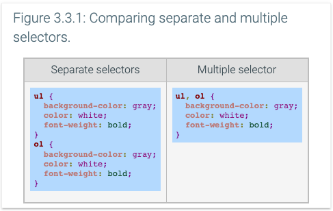

3.3 Advanced selectors
Universal selector
The universal selector, specified using an asterisk character (*), matches all elements in the web page. The universal selector is implied when an element name is not specified. Ex: The CSS selectors .highlight and *.highlight match exactly the same elements, where the universal selector is implied in .highlight and explicit in *.highlight.
The multiple selector, specified using a comma (,) to separate selectors, matches all listed elements to apply a style rule. Ex: The figure below shows two CSS examples that apply the same styles to <ol> and <ul> elements. The CSS on the left unnecessarily duplicates the styling declarations for <ol> and <ul> elements, whereas the CSS on the right uses a single style declaration using a multiple selector.
